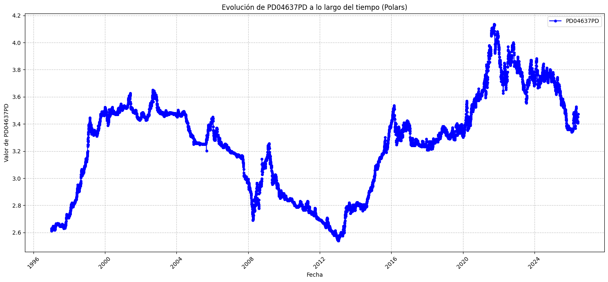
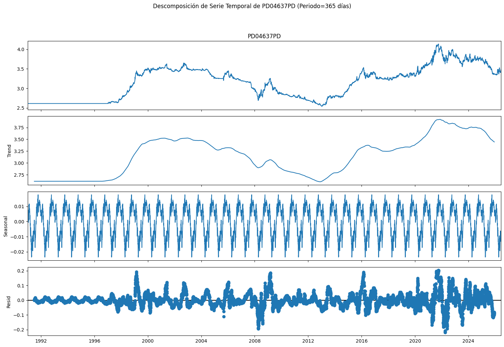
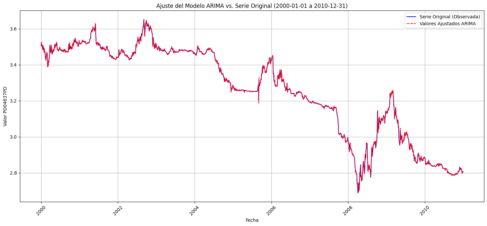
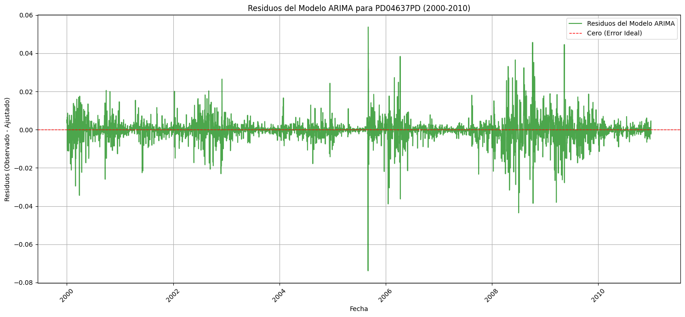

Big Data y Análisis de Datos usando Python con Inteligencia Artificial
| Autor | :VR ROJAS |
|---|---|
| :sacha.analytics@gmail.com | |
| Web | :sacha-analytics |
4. Caso estudio: variación histórica en el precio del Dolar según el BCRP#
I. Marco Teórico#
Los fundamentos conceptuales y empíricos sobre los cuales se construirá el análisis del precio histórico del dólar según el Banco Central de Reserva del Perú (BCRP). Este marco integrará teorías económicas relevantes, modelos financieros y enfoques econométricos que permitan comprender y explicar las fluctuaciones del tipo de cambio. Se abordarán conceptos clave como la paridad del poder adquisitivo (PPA), la teoría de la tasa de interés (TTI), la balanza de pagos, y el impacto de políticas monetarias y fiscales en la determinación del valor del dólar frente al sol peruano. Además, se revisarán estudios previos y metodologías utilizadas en la predicción y análisis de series temporales de tipos de cambio.
1.1 Objetivo#
El objetivo principal de este caso de estudio es analizar y comprender el comportamiento histórico del precio del dólar en Perú, tomando como referencia los datos proporcionados por el Banco Central de Reserva del Perú (BCRP). Se buscará identificar patrones, tendencias y factores macroeconómicos que han influido en las fluctuaciones del tipo de cambio, con el fin de desarrollar un modelo predictivo que permita anticipar futuros movimientos y ofrecer una herramienta de apoyo para la toma de decisiones financieras y económicas.
1.2 Fundamentos#
El estudio de la variación histórica del precio del dólar en el contexto de Big Data requiere un entendimiento sólido de los fundamentos teóricos y matemáticos que sustentan el análisis de series temporales financieras. Esto es crucial para manejar la complejidad y el volumen de datos asociados a los mercados cambiarios.
1.2.1 Fundamentos Teóricos#
Hipótesis del Mercado Eficiente (EMH): Propone que los precios de los activos financieros reflejan toda la información disponible, lo que implica que es imposible obtener consistentemente rendimientos anormales. Sin embargo, en el corto plazo, las ineficiencias o la asimetría de la información pueden generar oportunidades o patrones. En el contexto de Big Data, se puede explorar si grandes volúmenes de datos no tradicionales (noticias, redes sociales, etc.) pueden ofrecer información que contradiga la EMH en ciertos periodos.
Teoría de la Paridad del Poder Adquisitivo (PPA): Sugiere que los tipos de cambio entre dos monedas deberían ajustarse para que una cesta idéntica de bienes y servicios tenga el mismo precio en ambos países. La PPA absoluta y relativa son herramientas clave para evaluar la subvaloración o sobrevaloración de una moneda a largo plazo. Con Big Data, se pueden analizar canastas de bienes más detalladas y en tiempo real para observar desviaciones.
Teoría de la Tasa de Interés (TTI) / Paridad Descubierta de la Tasa de Interés (UIP): Postula que la diferencia en las tasas de interés entre dos países debe ser igual a la tasa esperada de depreciación de la moneda con mayor tasa de interés. Esto implica que los inversores son indiferentes entre invertir en activos de diferentes países. El análisis de Big Data puede incorporar un seguimiento más granular de las expectativas del mercado y los factores que influyen en las decisiones de los bancos centrales.
Enfoques de Balance de Pagos: El tipo de cambio se ve influenciado por los flujos de capital y comerciales entre países. Un déficit o superávit en la cuenta corriente o de capital puede presionar al alza o a la baja el valor de una moneda. Big Data permite monitorear un espectro más amplio de transacciones y flujos financieros.
Modelos de Expectativas Adaptativas y Racionales: Exploran cómo los agentes económicos forman sus expectativas sobre el futuro del tipo de cambio. Las expectativas racionales, en particular, asumen que los agentes utilizan toda la información disponible de manera óptima, lo que tiene implicaciones para la predictibilidad de los tipos de cambio.
1.2.2 Fundamentos Matemáticos y Econométricos (en el ámbito de Big Data)#
El análisis de series temporales del tipo de cambio con Big Data requiere técnicas avanzadas para manejar el volumen, la velocidad y la variedad de los datos.
Series Temporales (Time Series Analysis):
Modelos ARIMA (AutoRegressive Integrated Moving Average) y SARIMA: Son fundamentales para modelar series temporales con dependencia de autocorrelación. Permiten capturar tendencias, estacionalidad y componentes autorregresivos/medias móviles. En Big Data, se pueden aplicar a series de alta frecuencia o a agregaciones de datos.
Modelos GARCH (Generalized AutoRegressive Conditional Heteroskedasticity): Cruciales para modelar la volatilidad variable en el tiempo, un fenómeno común en los mercados financieros. Los modelos GARCH (y sus extensiones como EGARCH, GJR-GARCH) permiten predecir la volatilidad futura del tipo de cambio, lo cual es vital para la gestión de riesgos. El Big Data puede alimentar estos modelos con más información sobre los choques exógenos.
Cointegración y Modelos de Corrección de Errores (ECM): Cuando varias series temporales no son estacionarias pero tienen una relación de equilibrio a largo plazo, la cointegración es una técnica clave. Los ECM permiten modelar tanto la dinámica de corto plazo como el ajuste al equilibrio de largo plazo. Esto es relevante para entender las relaciones entre el tipo de cambio y otras variables macroeconómicas en grandes conjuntos de datos.
Modelos de Espacio de Estados y Filtro de Kalman: Permiten modelar sistemas dinámicos donde las variables de interés no son directamente observables. Son potentes para estimar variables latentes y para realizar predicciones en tiempo real, lo cual es útil en escenarios de Big Data donde la inferencia en línea es importante.
Machine Learning y Deep Learning para Series Temporales:
Redes Neuronales Recurrentes (RNNs), LSTMs (Long Short-Term Memory) y GRUs (Gated Recurrent Units): Son especialmente adecuadas para modelar secuencias y capturar dependencias a largo plazo en series temporales. Dada la no linealidad y la complejidad de los datos financieros, estos modelos pueden identificar patrones que los modelos econométricos lineales no pueden. El Big Data proporciona los vastos conjuntos de entrenamiento necesarios para estos modelos.
Transformers: Aunque originalmente desarrollados para procesamiento de lenguaje natural, los modelos Transformer están ganando terreno en series temporales por su capacidad para manejar dependencias de largo alcance y paralelizar el entrenamiento.
Modelos Ensemble (Random Forest, Gradient Boosting): Pueden combinar múltiples modelos para mejorar la precisión de las predicciones, particularmente cuando se integran un gran número de características (features) derivadas de Big Data.
Procesamiento de Lenguaje Natural (NLP) y Análisis de Sentimientos:
Análisis de Noticias y Redes Sociales: Con Big Data, se pueden analizar volúmenes masivos de texto (noticias financieras, posts en redes sociales, informes económicos) para extraer el sentimiento del mercado. Este sentimiento puede ser un predictor significativo de los movimientos del tipo de cambio, especialmente en el corto plazo. Técnicas como embedding de palabras, modelos basados en Transformer y clasificadores de sentimiento son esenciales.
Cómputo Distribuido y Paralelo:
Apache Spark, Hadoop: Para manejar el gran volumen de datos, las arquitecturas de Big Data requieren herramientas de cómputo distribuido que permitan procesar y analizar eficientemente los datos a escala. Esto es crucial para entrenar modelos complejos y ejecutar simulaciones intensivas.
Estos fundamentos teóricos y matemáticos, cuando se aplican con las herramientas y metodologías de Big Data, permiten un análisis más profundo y preciso de las variaciones históricas del precio del dólar, facilitando la identificación de patrones, la predicción de movimientos futuros y la comprensión de los factores que impulsan el mercado cambiario.
II. Metodología Práctica#
2.1. Recolección de datos#
Los datos históricos del tipo de cambio del BCRP se encuentran disponibles en los siguientes links.
Fuente de base de datos:
Datos para caso estudio: Precio del dolar diario.
2.2. Preprocesamiento de datos#
2.2.1 Preparar entorno#
# Paquete especializado en metodos numericos
import numpy as np
# Paquete especialozado manejo de estructuras de datos tipo tablas (Data Frames)
import pandas as pd
# Paquetes especializado para generar graficas
import seaborn as sns
import matplotlib.pyplot as plt
# Paquete especializados de estadística y metodos numéricos
from scipy import stats
Comparativa entre Pandas y Polars para Big Data
Característica |
Pandas |
Polars |
|---|---|---|
Backend / Idioma |
Python (con NumPy y C) |
Rust |
Rendimiento |
Generalmente más lento con grandes datasets |
Muy rápido, optimizado para grandes datasets |
Uso de Memoria |
Puede ser intensivo en memoria |
Más eficiente en memoria, columnar |
Modelo de Ejecución |
Eager (operaciones ejecutadas inmediatamente) |
Lazy (construye un plan de consulta optimizado) |
Paralelización |
Mayormente single-threaded |
Multi-threaded por defecto |
API |
Muy madura y extensa |
Moderna, orientada a expresiones y cadenas |
Escalabilidad |
Limitado por la memoria de la máquina |
Muy escalable, ideal para Big Data |
Comunidad/Ecosistema |
Grande, muchos recursos y bibliotecas |
Creciendo rápidamente, menos maduro que Pandas |
Casos de Uso (Big Data) |
Análisis exploratorio, datasets de tamaño medio |
Procesamiento de ETL, datasets muy grandes, alta performance |
Complejidad |
Más fácil de aprender inicialmente |
Curva de aprendizaje inicial ligeramente más alta debido al modelo Lazy |
import polars as pl
Tabla comparativa entre las funciones de los Data Frames de Pandas y Polars
Pandas |
Polars |
|---|---|
|
|
|
|
|
|
|
|
|
|
|
|
|
|
|
|
2.2.2 Gestión de archivos y directorios en la Nube#
La siguiente celda de código permite montar la aplicación Google Drive a la computadora en la nube a través de Google Colaboratory. Montar Google Drive en Colab es el proceso mediante el cual el entorno de ejecución de Colab obtiene acceso autorizado a los archivos de Google Drive, de forma que se pueden leer, escribir y modificar archivos durante la sesión.
from google.colab import drive
drive.mount('/content/drive')
---------------------------------------------------------------------------
ModuleNotFoundError Traceback (most recent call last)
Cell In[3], line 1
----> 1 from google.colab import drive
2 drive.mount('/content/drive')
File ~/anaconda3/envs/jupyterbook/lib/python3.13/site-packages/google/colab/__init__.py:20
17 from __future__ import division as _
18 from __future__ import print_function as _
---> 20 from google.colab import _import_hooks
21 from google.colab import _installation_commands
22 from google.colab import _shell_customizations
File ~/anaconda3/envs/jupyterbook/lib/python3.13/site-packages/google/colab/_import_hooks/__init__.py:16
1 # Copyright 2018 Google Inc.
2 #
3 # Licensed under the Apache License, Version 2.0 (the "License");
(...) 12 # See the License for the specific language govestylerning permissions and
13 # limitations under the License.
14 """Colab import customizations to the IPython runtime."""
---> 16 from google.colab._import_hooks import _altair
17 from google.colab._import_hooks import _cv2
20 def _register_hooks():
File ~/anaconda3/envs/jupyterbook/lib/python3.13/site-packages/google/colab/_import_hooks/_altair.py:16
1 # Copyright 2018 Google Inc. All rights reserved.
2 #
3 # Licensed under the Apache License, Version 2.0 (the "License");
(...) 12 # See the License for the specific language governing permissions and
13 # limitations under the License.
14 """Import hook for ensuring that Altair's Colab renderer is registered."""
---> 16 import imp
17 import logging
18 import os
ModuleNotFoundError: No module named 'imp'
La función explorarDrive(args) implementada en la siguiente celda de código permite explorar el contenido del Google Drive. Explorar contenido de Google Drive se refiere a la acción de navegar, buscar, visualizar y gestionar los archivos y carpetas almacenados en Google Drive, la plataforma de almacenamiento en la nube de Google.
def explorarDrive(ruta_carpeta=None):
import os
ruta_drive ="/content/drive/MyDrive/"
if ruta_carpeta is None:
contenido_carpeta = os.listdir(ruta_drive)
contenido_carpeta.sort()
n_elem = len(contenido_carpeta)
print(f"Ruta: {ruta_drive}")
print(f"Numero de elementos: {n_elem}")
for i in range(n_elem):
print(f"({i}) {contenido_carpeta[i]}")
else:
contenido_carpeta = os.listdir(ruta_drive + ruta_carpeta)
contenido_carpeta.sort()
n_elem = len(contenido_carpeta)
print(f"Ruta: {ruta_drive + ruta_carpeta}")
print(f"Numero de elementos: {n_elem}")
for i in range(n_elem):
print(f"({i}) {contenido_carpeta[i]}")
explorarDrive("Base_datos/finanzas/BCRP/precio_dolar")
Ruta: /content/drive/MyDrive/Base_datos/finanzas/BCRP/precio_dolar
Numero de elementos: 3
(0) Anuales-20260606-174010.csv
(1) Diarias-20260606-174010.csv
(2) Diarias-20260609-152222.csv
2.2.3 Importar base de datos#
nombre_baseDatos = "Diarias-20260609-152222.csv"
data_dir = '/content/drive/MyDrive/Base_datos/finanzas/BCRP/precio_dolar/'
column_names = [
'Fecha',
'Interbancario_Compra',
'Interbancario_Venta',
'Bancario_Compra',
'Bancario_Venta',
'Informal_Compra',
'Informal_Venta'
]
Polars
#df_polars = pl.read_csv(data_dir + nombre_baseDatos, skip_rows=False, has_header=False, new_columns=False)
df_polars = pl.read_csv(data_dir + nombre_baseDatos, null_values=None, has_header=True)
display(df_polars.head(n=5))
| PD04637PD | PD04638PD | PD04639PD | PD04640PD | PD04641PD | PD04642PD | |
|---|---|---|---|---|---|---|
| str | str | str | str | str | str | str |
| "" | "Tipo de cambio - TC Interbanca… | "Tipo de cambio - TC Interbanca… | "Tipo de cambio - TC Sistema ba… | "Tipo de cambio - TC Sistema ba… | "Tipo de cambio - TC Informal (… | "Tipo de cambio - TC Informal (… |
| "01Ene91" | "n.d." | "n.d." | "n.d." | "n.d." | "n.d." | "n.d." |
| "02Ene91" | "n.d." | "n.d." | "n.d." | "n.d." | "n.d." | "n.d." |
| "03Ene91" | "n.d." | "n.d." | "n.d." | "n.d." | "n.d." | "n.d." |
| "04Ene91" | "n.d." | "n.d." | "n.d." | "n.d." | "n.d." | "n.d." |
Generar un resumen estadístico de un Data Frame
Pandas |
Polars |
|---|---|
|
|
display(df_polars.describe())
| statistic | PD04637PD | PD04638PD | PD04639PD | PD04640PD | PD04641PD | PD04642PD | |
|---|---|---|---|---|---|---|---|
| str | str | str | str | str | str | str | str |
| "count" | "12945" | "12945" | "12945" | "12945" | "12945" | "12945" | "12945" |
| "null_count" | "0" | "0" | "0" | "0" | "0" | "0" | "0" |
| "mean" | null | null | null | null | null | null | null |
| "std" | null | null | null | null | null | null | null |
| "min" | "" | "2.53871428571429" | "2.53985714285714" | "2.539" | "2.541" | "2.337" | "2.339" |
| "25%" | null | null | null | null | null | null | null |
| "50%" | null | null | null | null | null | null | null |
| "75%" | null | null | null | null | null | null | null |
| "max" | "31Oct99" | "n.d." | "n.d." | "n.d." | "n.d." | "n.d." | "n.d." |
Pandas
df_pandas =pd.read_csv(data_dir + nombre_baseDatos)
display(df_pandas.head(n=5))
| Unnamed: 0 | PD04637PD | PD04638PD | PD04639PD | PD04640PD | PD04641PD | PD04642PD | |
|---|---|---|---|---|---|---|---|
| 0 | NaN | Tipo de cambio - TC Interbancario (S/ por US$)... | Tipo de cambio - TC Interbancario (S/ por US$)... | Tipo de cambio - TC Sistema bancario SBS (S/ p... | Tipo de cambio - TC Sistema bancario SBS (S/ p... | Tipo de cambio - TC Informal (S/ por US$) - Co... | Tipo de cambio - TC Informal (S/ por US$) - Ve... |
| 1 | 01Ene91 | n.d. | n.d. | n.d. | n.d. | n.d. | n.d. |
| 2 | 02Ene91 | n.d. | n.d. | n.d. | n.d. | n.d. | n.d. |
| 3 | 03Ene91 | n.d. | n.d. | n.d. | n.d. | n.d. | n.d. |
| 4 | 04Ene91 | n.d. | n.d. | n.d. | n.d. | n.d. | n.d. |
Generar resumen estadístico de un Data Frame
display(df_pandas.describe())
| Unnamed: 0 | PD04637PD | PD04638PD | PD04639PD | PD04640PD | PD04641PD | PD04642PD | |
|---|---|---|---|---|---|---|---|
| count | 12944 | 12945 | 12945 | 12945 | 12945 | 12945 | 12945 |
| unique | 12944 | 5048 | 5118 | 1429 | 1436 | 3523 | 3509 |
| top | 24May26 | n.d. | n.d. | n.d. | n.d. | n.d. | n.d. |
| freq | 1 | 5612 | 5612 | 5604 | 5604 | 6914 | 6914 |
Mostrar información resumida del Data Frame de Polars usando
Pandas |
Polars |
|---|---|
|
|
display(df_polars.schema)
Schema([('', String),
('PD04637PD', String),
('PD04638PD', String),
('PD04639PD', String),
('PD04640PD', String),
('PD04641PD', String),
('PD04642PD', String)])
display(df_polars.glimpse())
Rows: 12945
Columns: 7
$ <str> '', '01Ene91', '02Ene91', '03Ene91', '04Ene91', '05Ene91', '06Ene91', '07Ene91', '08Ene91', '09Ene91'
$ PD04637PD <str> 'Tipo de cambio - TC Interbancario (S/ por US$) - Compra', 'n.d.', 'n.d.', 'n.d.', 'n.d.', 'n.d.', 'n.d.', 'n.d.', 'n.d.', 'n.d.'
$ PD04638PD <str> 'Tipo de cambio - TC Interbancario (S/ por US$) - Venta', 'n.d.', 'n.d.', 'n.d.', 'n.d.', 'n.d.', 'n.d.', 'n.d.', 'n.d.', 'n.d.'
$ PD04639PD <str> 'Tipo de cambio - TC Sistema bancario SBS (S/ por US$) - Compra', 'n.d.', 'n.d.', 'n.d.', 'n.d.', 'n.d.', 'n.d.', 'n.d.', 'n.d.', 'n.d.'
$ PD04640PD <str> 'Tipo de cambio - TC Sistema bancario SBS (S/ por US$) - Venta', 'n.d.', 'n.d.', 'n.d.', 'n.d.', 'n.d.', 'n.d.', 'n.d.', 'n.d.', 'n.d.'
$ PD04641PD <str> 'Tipo de cambio - TC Informal (S/ por US$) - Compra (descontinuada)', 'n.d.', 'n.d.', 'n.d.', 'n.d.', 'n.d.', 'n.d.', 'n.d.', 'n.d.', 'n.d.'
$ PD04642PD <str> 'Tipo de cambio - TC Informal (S/ por US$) - Venta (descontinuada)', 'n.d.', 'n.d.', 'n.d.', 'n.d.', 'n.d.', 'n.d.', 'n.d.', 'n.d.', 'n.d.'
None
Mostrar información resumida del Data Frame de Pandas usando df.info()
display(df_pandas.info())
<class 'pandas.core.frame.DataFrame'>
RangeIndex: 12945 entries, 0 to 12944
Data columns (total 7 columns):
# Column Non-Null Count Dtype
--- ------ -------------- -----
0 Unnamed: 0 12944 non-null object
1 PD04637PD 12945 non-null object
2 PD04638PD 12945 non-null object
3 PD04639PD 12945 non-null object
4 PD04640PD 12945 non-null object
5 PD04641PD 12945 non-null object
6 PD04642PD 12945 non-null object
dtypes: object(7)
memory usage: 708.1+ KB
None
Mostrar sólo las primeras y últimas filas de un Data Frame de Polar
Pandas |
Polars |
|---|---|
|
|
|
|
display(df_polars.head(n=5))
| PD04637PD | PD04638PD | PD04639PD | PD04640PD | PD04641PD | PD04642PD | |
|---|---|---|---|---|---|---|
| str | str | str | str | str | str | str |
| "" | "Tipo de cambio - TC Interbanca… | "Tipo de cambio - TC Interbanca… | "Tipo de cambio - TC Sistema ba… | "Tipo de cambio - TC Sistema ba… | "Tipo de cambio - TC Informal (… | "Tipo de cambio - TC Informal (… |
| "01Ene91" | "n.d." | "n.d." | "n.d." | "n.d." | "n.d." | "n.d." |
| "02Ene91" | "n.d." | "n.d." | "n.d." | "n.d." | "n.d." | "n.d." |
| "03Ene91" | "n.d." | "n.d." | "n.d." | "n.d." | "n.d." | "n.d." |
| "04Ene91" | "n.d." | "n.d." | "n.d." | "n.d." | "n.d." | "n.d." |
display(df_polars.tail(n=5))
| PD04637PD | PD04638PD | PD04639PD | PD04640PD | PD04641PD | PD04642PD | |
|---|---|---|---|---|---|---|
| str | str | str | str | str | str | str |
| "05Jun26" | "3.45085714285714" | "3.45485714285714" | "3.442" | "3.443" | "n.d." | "n.d." |
| "06Jun26" | "n.d." | "n.d." | "n.d." | "n.d." | "n.d." | "n.d." |
| "07Jun26" | "n.d." | "n.d." | "n.d." | "n.d." | "n.d." | "n.d." |
| "08Jun26" | "3.47314285714286" | "3.48421428571429" | "3.488" | "3.498" | "n.d." | "n.d." |
| "09Jun26" | "n.d." | "n.d." | "n.d." | "n.d." | "n.d." | "n.d." |
Mostrar sólo las primeras y últimas filas de un Data Frame de Pandas usando df.head() y df.tail()
display(df_pandas.head(n=5))
| Unnamed: 0 | PD04637PD | PD04638PD | PD04639PD | PD04640PD | PD04641PD | PD04642PD | |
|---|---|---|---|---|---|---|---|
| 0 | NaN | Tipo de cambio - TC Interbancario (S/ por US$)... | Tipo de cambio - TC Interbancario (S/ por US$)... | Tipo de cambio - TC Sistema bancario SBS (S/ p... | Tipo de cambio - TC Sistema bancario SBS (S/ p... | Tipo de cambio - TC Informal (S/ por US$) - Co... | Tipo de cambio - TC Informal (S/ por US$) - Ve... |
| 1 | 01Ene91 | n.d. | n.d. | n.d. | n.d. | n.d. | n.d. |
| 2 | 02Ene91 | n.d. | n.d. | n.d. | n.d. | n.d. | n.d. |
| 3 | 03Ene91 | n.d. | n.d. | n.d. | n.d. | n.d. | n.d. |
| 4 | 04Ene91 | n.d. | n.d. | n.d. | n.d. | n.d. | n.d. |
display(df_pandas.tail(n=5))
| Unnamed: 0 | PD04637PD | PD04638PD | PD04639PD | PD04640PD | PD04641PD | PD04642PD | |
|---|---|---|---|---|---|---|---|
| 12940 | 05Jun26 | 3.45085714285714 | 3.45485714285714 | 3.442 | 3.443 | n.d. | n.d. |
| 12941 | 06Jun26 | n.d. | n.d. | n.d. | n.d. | n.d. | n.d. |
| 12942 | 07Jun26 | n.d. | n.d. | n.d. | n.d. | n.d. | n.d. |
| 12943 | 08Jun26 | 3.47314285714286 | 3.48421428571429 | 3.488 | 3.498 | n.d. | n.d. |
| 12944 | 09Jun26 | n.d. | n.d. | n.d. | n.d. | n.d. | n.d. |
Extraer los nombres de las columnas usando
Pandas |
Polars |
|---|---|
|
|
column_names_polars = df_polars.columns
display(column_names_polars)
['',
'PD04637PD',
'PD04638PD',
'PD04639PD',
'PD04640PD',
'PD04641PD',
'PD04642PD']
column_names_pandas = df_pandas.columns
display(column_names_pandas)
Index(['Unnamed: 0', 'PD04637PD', 'PD04638PD', 'PD04639PD', 'PD04640PD',
'PD04641PD', 'PD04642PD'],
dtype='object')
Extrar las dimensiones de un Data Frame
Pandas |
Polars |
|---|---|
|
|
print(df_polars.shape) # Use .shape to get dimensions (rows, columns)
print(df_pandas.shape)
(12945, 7)
(12945, 7)
Hacer una copia de un Data Frame
Pandas |
Polars |
|---|---|
|
|
Hacer una copia de un Data Frame de Polars usando df.clone()
df_polars_copia1 = df_polars.clone()
Hacer una copia de un Data Frame de Pandas usando df.copy()
df_pandas_copia1 = df_pandas.copy()
2.2.4 Indexar Data Frame#
Polars
display(df_polars_copia1['PD04637PD'][5])
'n.d.'
display(df_polars_copia1.select('PD04638PD').item(1,0)) # item(fila_index, col_index)
'n.d.'
display(df_polars_copia1.item(0, 2)) # item(row_index, col_index)
'Tipo de cambio - TC Interbancario (S/ por US$) - Venta'
Pandas
display(df_pandas_copia1['PD04637PD'][5])
'n.d.'
display(df_pandas_copia1.loc[1, 'PD04638PD']) # loc[row_index, col_index]
'n.d.'
display(df_pandas_copia1.iloc[0, 2]) # iloc[row_index, col_index]
'Tipo de cambio - TC Interbancario (S/ por US$) - Venta'
2.2.5. Transformar datos de Data Frame#
display(df_polars_copia1)
| PD04637PD | PD04638PD | PD04639PD | PD04640PD | PD04641PD | PD04642PD | |
|---|---|---|---|---|---|---|
| str | str | str | str | str | str | str |
| "" | "Tipo de cambio - TC Interbanca… | "Tipo de cambio - TC Interbanca… | "Tipo de cambio - TC Sistema ba… | "Tipo de cambio - TC Sistema ba… | "Tipo de cambio - TC Informal (… | "Tipo de cambio - TC Informal (… |
| "01Ene91" | "n.d." | "n.d." | "n.d." | "n.d." | "n.d." | "n.d." |
| "02Ene91" | "n.d." | "n.d." | "n.d." | "n.d." | "n.d." | "n.d." |
| "03Ene91" | "n.d." | "n.d." | "n.d." | "n.d." | "n.d." | "n.d." |
| "04Ene91" | "n.d." | "n.d." | "n.d." | "n.d." | "n.d." | "n.d." |
| … | … | … | … | … | … | … |
| "05Jun26" | "3.45085714285714" | "3.45485714285714" | "3.442" | "3.443" | "n.d." | "n.d." |
| "06Jun26" | "n.d." | "n.d." | "n.d." | "n.d." | "n.d." | "n.d." |
| "07Jun26" | "n.d." | "n.d." | "n.d." | "n.d." | "n.d." | "n.d." |
| "08Jun26" | "3.47314285714286" | "3.48421428571429" | "3.488" | "3.498" | "n.d." | "n.d." |
| "09Jun26" | "n.d." | "n.d." | "n.d." | "n.d." | "n.d." | "n.d." |
Polars
display(df_polars_copia1.schema)
Schema([('', String),
('PD04637PD', String),
('PD04638PD', String),
('PD04639PD', String),
('PD04640PD', String),
('PD04641PD', String),
('PD04642PD', String)])
a_polars = df_polars_copia1["PD04637PD"][12943]
b_polars = df_polars_copia1["PD04637PD"][12940]
c_polars = a_polars + b_polars
display(c_polars)
'3.473142857142863.45085714285714'
def cambiar_caracteres_null_polars(df: pl.DataFrame) -> pl.DataFrame:
"""
Reemplaza los valores 'n.d.' en las columnas numéricas de un DataFrame de Polars con valores nulos
y luego las convierte a tipo flotante. La primera columna (asumida como fecha) se mantiene sin cambios.
Args:
df (pl.DataFrame): El DataFrame de Polars de entrada.
Returns:
pl.DataFrame: El DataFrame con los valores 'n.d.' reemplazados por nulos
y las columnas numéricas convertidas a pl.Float64.
"""
# Obtener todas las columnas del DataFrame
columnas = df.columns
# Inicializar una lista para las expresiones de transformación
expresiones = []
# La primera columna (df.columns[0]) parece ser de fechas y no contiene 'n.d.',
# por lo que la mantenemos tal cual o la añadimos directamente a las expresiones.
expresiones.append(pl.col(columnas[0]))
# Para el resto de las columnas (asumidas como numéricas que contienen 'n.d.')
for col in columnas[1:]:
# Reemplazar 'n.d.' con nulos y luego convertir a Float64. El 'strict=False'
# asegura que los valores no parseables como 'n.d.' se conviertan a null.
expresiones.append(
pl.col(col).cast(pl.Float64, strict=False).alias(col)
)
# Aplicar las expresiones al DataFrame
df_cleaned = df.with_columns(expresiones)
return df_cleaned
df_polars_con_null = cambiar_caracteres_null_polars(df_polars_copia1)
display(df_polars_con_null.head())
| PD04637PD | PD04638PD | PD04639PD | PD04640PD | PD04641PD | PD04642PD | |
|---|---|---|---|---|---|---|
| str | f64 | f64 | f64 | f64 | f64 | f64 |
| "" | null | null | null | null | null | null |
| "01Ene91" | null | null | null | null | null | null |
| "02Ene91" | null | null | null | null | null | null |
| "03Ene91" | null | null | null | null | null | null |
| "04Ene91" | null | null | null | null | null | null |
a = df_polars_con_null["PD04637PD"][12943]
b = df_polars_con_null["PD04637PD"][12940]
c = a + b
display(c)
6.9239999999999995
Pandas
display(df_pandas_copia1)
| Unnamed: 0 | PD04637PD | PD04638PD | PD04639PD | PD04640PD | PD04641PD | PD04642PD | |
|---|---|---|---|---|---|---|---|
| 0 | NaN | Tipo de cambio - TC Interbancario (S/ por US$)... | Tipo de cambio - TC Interbancario (S/ por US$)... | Tipo de cambio - TC Sistema bancario SBS (S/ p... | Tipo de cambio - TC Sistema bancario SBS (S/ p... | Tipo de cambio - TC Informal (S/ por US$) - Co... | Tipo de cambio - TC Informal (S/ por US$) - Ve... |
| 1 | 01Ene91 | n.d. | n.d. | n.d. | n.d. | n.d. | n.d. |
| 2 | 02Ene91 | n.d. | n.d. | n.d. | n.d. | n.d. | n.d. |
| 3 | 03Ene91 | n.d. | n.d. | n.d. | n.d. | n.d. | n.d. |
| 4 | 04Ene91 | n.d. | n.d. | n.d. | n.d. | n.d. | n.d. |
| ... | ... | ... | ... | ... | ... | ... | ... |
| 12940 | 05Jun26 | 3.45085714285714 | 3.45485714285714 | 3.442 | 3.443 | n.d. | n.d. |
| 12941 | 06Jun26 | n.d. | n.d. | n.d. | n.d. | n.d. | n.d. |
| 12942 | 07Jun26 | n.d. | n.d. | n.d. | n.d. | n.d. | n.d. |
| 12943 | 08Jun26 | 3.47314285714286 | 3.48421428571429 | 3.488 | 3.498 | n.d. | n.d. |
| 12944 | 09Jun26 | n.d. | n.d. | n.d. | n.d. | n.d. | n.d. |
12945 rows × 7 columns
a_pandas = df_pandas_copia1["PD04637PD"][12943]
b_pandas = df_pandas_copia1["PD04637PD"][12940]
c_pandas = a_pandas + b_pandas
display(c_pandas)
'3.473142857142863.45085714285714'
def df_completar_caracter_NaN_pandas(df: pd.DataFrame) -> pd.DataFrame:
"""
Reemplaza los valores 'n.d.' con np.nan en un DataFrame de Pandas
y convierte las columnas afectadas a tipo numérico (float).
La primera columna (asumida como fecha/identificador) se excluye de la conversión.
Args:
df (pd.DataFrame): El DataFrame de Pandas de entrada.
Returns:
pd.DataFrame: El DataFrame con los valores 'n.d.' reemplazados por np.nan
y las columnas numéricas convertidas a float.
"""
# Hacer una copia para evitar modificar el DataFrame original directamente
df_cleaned = df.copy()
# Identificar las columnas a procesar (todas excepto la primera)
columns_to_process = df_cleaned.columns[1:]
# Reemplazar 'n.d.' con NaN (Not a Number) en las columnas seleccionadas
df_cleaned[columns_to_process] = df_cleaned[columns_to_process].replace('n.d.', np.nan)
# Convertir las columnas a tipo numérico (float)
for col in columns_to_process:
# errors='coerce' convertirá los valores no numéricos (como los 'n.d.' restantes si hubiera) a NaN
df_cleaned[col] = pd.to_numeric(df_cleaned[col], errors='coerce')
return df_cleaned
df_pandas_con_null = df_completar_caracter_NaN_pandas(df_pandas_copia1)
display(df_pandas_con_null.head())
display(df_pandas_con_null.info())
| Unnamed: 0 | PD04637PD | PD04638PD | PD04639PD | PD04640PD | PD04641PD | PD04642PD | |
|---|---|---|---|---|---|---|---|
| 0 | NaN | NaN | NaN | NaN | NaN | NaN | NaN |
| 1 | 01Ene91 | NaN | NaN | NaN | NaN | NaN | NaN |
| 2 | 02Ene91 | NaN | NaN | NaN | NaN | NaN | NaN |
| 3 | 03Ene91 | NaN | NaN | NaN | NaN | NaN | NaN |
| 4 | 04Ene91 | NaN | NaN | NaN | NaN | NaN | NaN |
<class 'pandas.core.frame.DataFrame'>
RangeIndex: 12945 entries, 0 to 12944
Data columns (total 7 columns):
# Column Non-Null Count Dtype
--- ------ -------------- -----
0 Unnamed: 0 12944 non-null object
1 PD04637PD 7332 non-null float64
2 PD04638PD 7332 non-null float64
3 PD04639PD 7340 non-null float64
4 PD04640PD 7340 non-null float64
5 PD04641PD 6030 non-null float64
6 PD04642PD 6030 non-null float64
dtypes: float64(6), object(1)
memory usage: 708.1+ KB
None
2.2.6. Contar datos faltante o errados#
Polars
display(df_polars_con_null.null_count())
| PD04637PD | PD04638PD | PD04639PD | PD04640PD | PD04641PD | PD04642PD | |
|---|---|---|---|---|---|---|
| u32 | u32 | u32 | u32 | u32 | u32 | u32 |
| 0 | 5613 | 5613 | 5605 | 5605 | 6915 | 6915 |
Determinar la cantidad y el porcentaje de valores null
def contar_null_porcentajes_polars(df: pl.DataFrame) -> pl.DataFrame:
"""
Cuenta la cantidad y el porcentaje de valores nulos por columna en un DataFrame de Polars.
Args:
df (pl.DataFrame): El DataFrame de Polars de entrada.
Returns:
pl.DataFrame: Un nuevo DataFrame con las columnas:
'columna', 'null_count' y 'porcentaje_null'.
"""
total_filas = df.height
null_counts_df = df.null_count()
resultados = []
for col_name in df.columns:
null_count = null_counts_df[col_name][0]
porcentaje_null = (null_count / total_filas) * 100 if total_filas > 0 else 0.0
resultados.append({
"columna": col_name,
"Cantidad null": null_count,
"Porcentaje null": porcentaje_null
})
return pl.DataFrame(resultados)
resultado_null_polars= contar_null_porcentajes_polars(df_polars_con_null)
display(resultado_null_polars)
| columna | Cantidad null | Porcentaje null |
|---|---|---|
| str | i64 | f64 |
| "" | 0 | 0.0 |
| "PD04637PD" | 5613 | 43.360371 |
| "PD04638PD" | 5613 | 43.360371 |
| "PD04639PD" | 5605 | 43.298571 |
| "PD04640PD" | 5605 | 43.298571 |
| "PD04641PD" | 6915 | 53.418308 |
| "PD04642PD" | 6915 | 53.418308 |
Pandas
Determinar la cantidad y el porcentaje de valores null
def contar_nan_porcentajes_pandas(dataframe):
# numero de NaN por columna
nan_counts = dataframe.isna().sum()
# numero total de filas en el DataFrame
total_rows = len(dataframe)
# porcentaje de NaN por columna
nan_porcentaje = (nan_counts / total_rows) * 100
# Crear un DataFrame para mostrar la cantidad y porcentajes de NaN
nan_summary = pd.DataFrame({
'NaN Cantidad': nan_counts,
'NaN Porcemtaje (%)': nan_porcentaje
})
return nan_summary
resultado_nan_pandas= contar_nan_porcentajes_pandas(df_pandas_con_null)
display(resultado_null_polars)
| columna | Cantidad null | Porcentaje null |
|---|---|---|
| str | i64 | f64 |
| "" | 0 | 0.0 |
| "PD04637PD" | 5613 | 43.360371 |
| "PD04638PD" | 5613 | 43.360371 |
| "PD04639PD" | 5605 | 43.298571 |
| "PD04640PD" | 5605 | 43.298571 |
| "PD04641PD" | 6915 | 53.418308 |
| "PD04642PD" | 6915 | 53.418308 |
2.2.6. Interpolar datos faltantes o errados#
Polars
display(df_polars_con_null)
| PD04637PD | PD04638PD | PD04639PD | PD04640PD | PD04641PD | PD04642PD | |
|---|---|---|---|---|---|---|
| str | f64 | f64 | f64 | f64 | f64 | f64 |
| "" | null | null | null | null | null | null |
| "01Ene91" | null | null | null | null | null | null |
| "02Ene91" | null | null | null | null | null | null |
| "03Ene91" | null | null | null | null | null | null |
| "04Ene91" | null | null | null | null | null | null |
| … | … | … | … | … | … | … |
| "05Jun26" | 3.450857 | 3.454857 | 3.442 | 3.443 | null | null |
| "06Jun26" | null | null | null | null | null | null |
| "07Jun26" | null | null | null | null | null | null |
| "08Jun26" | 3.473143 | 3.484214 | 3.488 | 3.498 | null | null |
| "09Jun26" | null | null | null | null | null | null |
import datetime # Asegúrate de que datetime está importado
fechas_polars = pl.date_range(
start=datetime.date(1991, 1, 1),
end=datetime.date(2026, 6, 9),
interval="1d",
eager=True
)
display(fechas_polars)
| literal |
|---|
| date |
| 1991-01-01 |
| 1991-01-02 |
| 1991-01-03 |
| 1991-01-04 |
| 1991-01-05 |
| … |
| 2026-06-05 |
| 2026-06-06 |
| 2026-06-07 |
| 2026-06-08 |
| 2026-06-09 |
# Renombrar la serie fechas_polars para que tenga el nombre 'Fecha'
fechas_polars_con_nombre = fechas_polars.alias("Fecha")
display(fechas_polars_con_nombre)
| Fecha |
|---|
| date |
| 1991-01-01 |
| 1991-01-02 |
| 1991-01-03 |
| 1991-01-04 |
| 1991-01-05 |
| … |
| 2026-06-05 |
| 2026-06-06 |
| 2026-06-07 |
| 2026-06-08 |
| 2026-06-09 |
display(df_polars_con_null.head())
| PD04637PD | PD04638PD | PD04639PD | PD04640PD | PD04641PD | PD04642PD | |
|---|---|---|---|---|---|---|
| str | f64 | f64 | f64 | f64 | f64 | f64 |
| "" | null | null | null | null | null | null |
| "01Ene91" | null | null | null | null | null | null |
| "02Ene91" | null | null | null | null | null | null |
| "03Ene91" | null | null | null | null | null | null |
| "04Ene91" | null | null | null | null | null | null |
# Eliminar la primera columna actual de df_polars_con_null (la que tiene el nombre vacío '')
df_polars_con_null = df_polars_con_null.drop(df_polars_con_null.columns[0])
display(df_polars_con_null.head())
| PD04637PD | PD04638PD | PD04639PD | PD04640PD | PD04641PD | PD04642PD |
|---|---|---|---|---|---|
| f64 | f64 | f64 | f64 | f64 | f64 |
| null | null | null | null | null | null |
| null | null | null | null | null | null |
| null | null | null | null | null | null |
| null | null | null | null | null | null |
| null | null | null | null | null | null |
display(df_polars_con_null.shape)
(12945, 6)
# Eliminar la primera fila del DataFrame que contiene metadatos, para que coincida con la longitud de las fechas
df_polars_con_null = df_polars_con_null.slice(1)
display(df_polars_con_null.shape)
(12944, 6)
# Insertar la serie de fechas renombrada al inicio del DataFrame
df_polars_con_null = df_polars_con_null.with_columns(fechas_polars_con_nombre)
display(df_polars_con_null.head())
display(df_polars_con_null.shape)
| PD04637PD | PD04638PD | PD04639PD | PD04640PD | PD04641PD | PD04642PD | Fecha |
|---|---|---|---|---|---|---|
| f64 | f64 | f64 | f64 | f64 | f64 | date |
| null | null | null | null | null | null | 1991-01-01 |
| null | null | null | null | null | null | 1991-01-02 |
| null | null | null | null | null | null | 1991-01-03 |
| null | null | null | null | null | null | 1991-01-04 |
| null | null | null | null | null | null | 1991-01-05 |
(12944, 7)
# Reordenar las columnas para asegurar que 'Fecha' sea la primera
# Obtener las columnas actuales
nombre_columnas = df_polars_con_null.columns
display(nombre_columnas)
['PD04637PD',
'PD04638PD',
'PD04639PD',
'PD04640PD',
'PD04641PD',
'PD04642PD',
'Fecha']
# Crear una nueva lista de columnas, empezando con 'Fecha'
nuevo_orden_columnas = ["Fecha"]
# Añadir el resto de las columnas, excluyendo 'Fecha' si ya estuviera (aunque no debería en este punto)
for col in nombre_columnas:
if col != "Fecha":
nuevo_orden_columnas.append(col)
display(nuevo_orden_columnas)
['Fecha',
'PD04637PD',
'PD04638PD',
'PD04639PD',
'PD04640PD',
'PD04641PD',
'PD04642PD']
df_polars_con_null = df_polars_con_null.select(nuevo_orden_columnas)
display(df_polars_con_null.head())
| Fecha | PD04637PD | PD04638PD | PD04639PD | PD04640PD | PD04641PD | PD04642PD |
|---|---|---|---|---|---|---|
| date | f64 | f64 | f64 | f64 | f64 | f64 |
| 1991-01-01 | null | null | null | null | null | null |
| 1991-01-02 | null | null | null | null | null | null |
| 1991-01-03 | null | null | null | null | null | null |
| 1991-01-04 | null | null | null | null | null | null |
| 1991-01-05 | null | null | null | null | null | null |
Interpolar datos faltantes o errados
Para interpolar los datos faltantes en una columna específica de nuestro DataFrame de Polars, utilizaremos la función fill_null() con las estrategias de ‘adelante’ y ‘atrás’. Esto significa que un valor nulo se rellenará con el último valor válido conocido (hacia adelante) y luego con el siguiente valor válido conocido (hacia atrás) si aún quedan nulos al principio o al final de la serie.
import pandas as pd
def interpolar_df_polars_col(
df: pl.DataFrame,
columna_a_interpolar: str,
method: str = 'ffill_bfill', # 'ffill_bfill', 'linear', 'polynomial', 'spline'
order: int | None = None # Requerido para los métodos 'polynomial' y 'spline'
) -> pl.DataFrame:
"""
Interpola los valores nulos en una columna específica de un DataFrame de Polars
usando diferentes estrategias de relleno, incluyendo forward/backward fill y
métodos avanzados de Pandas (lineal, polinomial, spline).
Args:
df (pl.DataFrame): El DataFrame de Polars de entrada.
columna_a_interpolar (str): El nombre de la columna que se desea interpolar.
method (str): El método de interpolación a utilizar. Puede ser:
- 'ffill_bfill': Relleno hacia adelante seguido de relleno hacia atrás (Polars nativo).
- 'linear': Interpolación lineal (usa Pandas).
- 'polynomial': Interpolación polinomial (usa Pandas).
- 'spline': Interpolación spline (usa Pandas).
order (int | None): El grado para los métodos 'polynomial' y 'spline'.
Requerido si se usa 'polynomial' o 'spline'.
Returns:
pl.DataFrame: Un nuevo DataFrame con la columna especificada interpolada.
Las otras columnas permanecen sin cambios.
Raises:
ValueError: Si la columna no existe o si un método requiere 'order' y no se proporciona.
"""
# Asegurarse de que la columna existe en el DataFrame
if columna_a_interpolar not in df.columns:
raise ValueError(f"La columna '{columna_a_interpolar}' no existe en el DataFrame.")
if method == 'ffill_bfill':
# Aplicar forward fill (rellenar hacia adelante)
df_interpolado = df.with_columns(
pl.col(columna_a_interpolar).fill_null(strategy='forward')
)
# Luego aplicar backward fill (rellenar hacia atrás) para cualquier nulo inicial
df_interpolado = df_interpolado.with_columns(
pl.col(columna_a_interpolar).fill_null(strategy='backward')
)
elif method in ['linear', 'polynomial', 'spline']:
# Convertir la columna a Series de Pandas para usar sus métodos de interpolación avanzados
series_polars = df.get_column(columna_a_interpolar)
series_pandas = series_polars.to_pandas()
# Aplicar interpolación de Pandas
if method == 'polynomial' or method == 'spline':
if order is None:
raise ValueError(f"El método '{method}' requiere el parámetro 'order'.")
interpolated_series_pandas = series_pandas.interpolate(method=method, order=order)
else: # 'linear'
interpolated_series_pandas = series_pandas.interpolate(method=method)
# Convertir la Series interpolada de Pandas de nuevo a Series de Polars
interpolated_series_polars = pl.Series(name=columna_a_interpolar, values=interpolated_series_pandas)
# Reemplazar la columna original en el DataFrame de Polars con la interpolada
df_interpolado = df.with_columns(interpolated_series_polars)
# Después de la interpolación de Pandas, todavía pueden quedar nulos al principio o al final
# si no hay datos suficientes para interpolar. Un ffill/bfill final puede manejarlos.
df_interpolado = df_interpolado.with_columns(
pl.col(columna_a_interpolar).fill_null(strategy='forward')
).with_columns(
pl.col(columna_a_interpolar).fill_null(strategy='backward')
)
else:
raise ValueError(f"Método de interpolación '{method}' no soportado.")
return df_interpolado
Ahora que la función interpolar_df_polars_col ha sido extendida para incluir métodos de interpolación de Pandas, demostraremos su uso con diferentes opciones: ‘linear’, ‘polynomial’ (grado 2 y 3) y ‘spline’.
Para esto, crearemos una copia de df_polars_con_null para cada demostración y aplicaremos la interpolación a la columna ‘PD04637PD’.
# Demostración con el método 'linear'
print("--- Interpolación LINEAL ---")
df_linear_polar = df_polars_con_null.clone()
print("Nulos antes de interpolar (linear): ", df_linear_polar.select(pl.col('PD04637PD').null_count()).item(0,0))
df_linear_interpolado_polar = interpolar_df_polars_col(df_linear_polar, 'PD04637PD', method='linear')
print("Nulos después de interpolar (linear): ", df_linear_interpolado_polar.select(pl.col('PD04637PD').null_count()).item(0,0))
display(df_linear_interpolado_polar.head())
--- Interpolación LINEAL ---
Nulos antes de interpolar (linear): 5612
Nulos después de interpolar (linear): 0
| Fecha | PD04637PD | PD04638PD | PD04639PD | PD04640PD | PD04641PD | PD04642PD |
|---|---|---|---|---|---|---|
| date | f64 | f64 | f64 | f64 | f64 | f64 |
| 1991-01-01 | 2.613 | null | null | null | null | null |
| 1991-01-02 | 2.613 | null | null | null | null | null |
| 1991-01-03 | 2.613 | null | null | null | null | null |
| 1991-01-04 | 2.613 | null | null | null | null | null |
| 1991-01-05 | 2.613 | null | null | null | null | null |
# Demostración con el método 'polynomial' de orden 2
print("\n--- Interpolación POLYNOMIAL (order=2) ---")
df_poly2 = df_polars_con_null.clone()
print("Nulos antes de interpolar (polynomial, order=2): ", df_poly2.select(pl.col('PD04637PD').null_count()).item(0,0))
df_poly2_interpolado = interpolar_df_polars_col(df_poly2, 'PD04637PD', method='polynomial', order=2)
print("Nulos después de interpolar (polynomial, order=2): ", df_poly2_interpolado.select(pl.col('PD04637PD').null_count()).item(0,0))
display(df_poly2_interpolado.head())
--- Interpolación POLYNOMIAL (order=2) ---
Nulos antes de interpolar (polynomial, order=2): 5612
Nulos después de interpolar (polynomial, order=2): 0
| Fecha | PD04637PD | PD04638PD | PD04639PD | PD04640PD | PD04641PD | PD04642PD |
|---|---|---|---|---|---|---|
| date | f64 | f64 | f64 | f64 | f64 | f64 |
| 1991-01-01 | 2.613 | null | null | null | null | null |
| 1991-01-02 | 2.613 | null | null | null | null | null |
| 1991-01-03 | 2.613 | null | null | null | null | null |
| 1991-01-04 | 2.613 | null | null | null | null | null |
| 1991-01-05 | 2.613 | null | null | null | null | null |
# Demostración con el método 'polynomial' de orden 3
print("\n--- Interpolación POLYNOMIAL (order=3) ---")
df_poly3 = df_polars_con_null.clone()
print("Nulos antes de interpolar (polynomial, order=3): ", df_poly3.select(pl.col('PD04637PD').null_count()).item(0,0))
df_poly3_interpolado = interpolar_df_polars_col(df_poly3, 'PD04637PD', method='polynomial', order=3)
print("Nulos después de interpolar (polynomial, order=3): ", df_poly3_interpolado.select(pl.col('PD04637PD').null_count()).item(0,0))
display(df_poly3_interpolado.head())
--- Interpolación POLYNOMIAL (order=3) ---
Nulos antes de interpolar (polynomial, order=3): 5612
Nulos después de interpolar (polynomial, order=3): 0
| Fecha | PD04637PD | PD04638PD | PD04639PD | PD04640PD | PD04641PD | PD04642PD |
|---|---|---|---|---|---|---|
| date | f64 | f64 | f64 | f64 | f64 | f64 |
| 1991-01-01 | 2.613 | null | null | null | null | null |
| 1991-01-02 | 2.613 | null | null | null | null | null |
| 1991-01-03 | 2.613 | null | null | null | null | null |
| 1991-01-04 | 2.613 | null | null | null | null | null |
| 1991-01-05 | 2.613 | null | null | null | null | null |
# Demostración con el método 'spline' de orden 3
print("\n--- Interpolación SPLINE (order=3) ---")
df_spline = df_polars_con_null.clone()
print("Nulos antes de interpolar (spline, order=3): ", df_spline.select(pl.col('PD04637PD').null_count()).item(0,0))
df_spline_interpolado = interpolar_df_polars_col(df_spline, 'PD04637PD', method='spline', order=3)
print("Nulos después de interpolar (spline, order=3): ", df_spline_interpolado.select(pl.col('PD04637PD').null_count()).item(0,0))
display(df_spline_interpolado.head())
--- Interpolación SPLINE (order=3) ---
Nulos antes de interpolar (spline, order=3): 5612
Nulos después de interpolar (spline, order=3): 0
| Fecha | PD04637PD | PD04638PD | PD04639PD | PD04640PD | PD04641PD | PD04642PD |
|---|---|---|---|---|---|---|
| date | f64 | f64 | f64 | f64 | f64 | f64 |
| 1991-01-01 | 2.613 | null | null | null | null | null |
| 1991-01-02 | 2.613 | null | null | null | null | null |
| 1991-01-03 | 2.613 | null | null | null | null | null |
| 1991-01-04 | 2.613 | null | null | null | null | null |
| 1991-01-05 | 2.613 | null | null | null | null | null |
Contar los valores faltantes o errados después de realizar la interpolación lineal.
display(contar_null_porcentajes_polars(df_linear_interpolado_polar))
| columna | Cantidad null | Porcentaje null |
|---|---|---|
| str | i64 | f64 |
| "Fecha" | 0 | 0.0 |
| "PD04637PD" | 0 | 0.0 |
| "PD04638PD" | 5612 | 43.355995 |
| "PD04639PD" | 5604 | 43.29419 |
| "PD04640PD" | 5604 | 43.29419 |
| "PD04641PD" | 6914 | 53.41471 |
| "PD04642PD" | 6914 | 53.41471 |
Pandas
display(df_pandas_con_null)
| Unnamed: 0 | PD04637PD | PD04638PD | PD04639PD | PD04640PD | PD04641PD | PD04642PD | |
|---|---|---|---|---|---|---|---|
| 0 | NaN | NaN | NaN | NaN | NaN | NaN | NaN |
| 1 | 01Ene91 | NaN | NaN | NaN | NaN | NaN | NaN |
| 2 | 02Ene91 | NaN | NaN | NaN | NaN | NaN | NaN |
| 3 | 03Ene91 | NaN | NaN | NaN | NaN | NaN | NaN |
| 4 | 04Ene91 | NaN | NaN | NaN | NaN | NaN | NaN |
| ... | ... | ... | ... | ... | ... | ... | ... |
| 12940 | 05Jun26 | 3.450857 | 3.454857 | 3.442 | 3.443 | NaN | NaN |
| 12941 | 06Jun26 | NaN | NaN | NaN | NaN | NaN | NaN |
| 12942 | 07Jun26 | NaN | NaN | NaN | NaN | NaN | NaN |
| 12943 | 08Jun26 | 3.473143 | 3.484214 | 3.488 | 3.498 | NaN | NaN |
| 12944 | 09Jun26 | NaN | NaN | NaN | NaN | NaN | NaN |
12945 rows × 7 columns
df_pandas_con_null = df_pandas_con_null.iloc[1:]
display(df_pandas_con_null)
| Unnamed: 0 | PD04637PD | PD04638PD | PD04639PD | PD04640PD | PD04641PD | PD04642PD | |
|---|---|---|---|---|---|---|---|
| 1 | 01Ene91 | NaN | NaN | NaN | NaN | NaN | NaN |
| 2 | 02Ene91 | NaN | NaN | NaN | NaN | NaN | NaN |
| 3 | 03Ene91 | NaN | NaN | NaN | NaN | NaN | NaN |
| 4 | 04Ene91 | NaN | NaN | NaN | NaN | NaN | NaN |
| 5 | 05Ene91 | NaN | NaN | NaN | NaN | NaN | NaN |
| ... | ... | ... | ... | ... | ... | ... | ... |
| 12940 | 05Jun26 | 3.450857 | 3.454857 | 3.442 | 3.443 | NaN | NaN |
| 12941 | 06Jun26 | NaN | NaN | NaN | NaN | NaN | NaN |
| 12942 | 07Jun26 | NaN | NaN | NaN | NaN | NaN | NaN |
| 12943 | 08Jun26 | 3.473143 | 3.484214 | 3.488 | 3.498 | NaN | NaN |
| 12944 | 09Jun26 | NaN | NaN | NaN | NaN | NaN | NaN |
12944 rows × 7 columns
fechas_pandas = pd.date_range(start='1991-01-01', end="2026-06-09", freq='D')
Ahora, vamos a insertar la serie de fechas (fechas_pandas) en el DataFrame df_pandas_con_null.
Para hacer esto, primero eliminaremos la columna Unnamed: 0 que es la columna de fechas original con el formato de texto y luego asignaremos la serie fechas_pandas a una nueva columna llamada Fecha.
# Eliminar la columna 'Unnamed: 0' del DataFrame df_pandas_con_null si existe
if 'Unnamed: 0' in df_pandas_con_null.columns:
df_pandas_con_null = df_pandas_con_null.drop(columns=['Unnamed: 0'])
# Asegurarse de que df_pandas_con_null tenga la misma longitud que fechas_pandas.
# Esto es necesario si la primera fila de df_pandas_con_null es un encabezado o metadato
# y no se ha eliminado consistentemente.
if len(df_pandas_con_null) > len(fechas_pandas):
df_pandas_con_null = df_pandas_con_null.iloc[1:].copy() # Elimina la primera fila y crea una copia explícita
# Antes de asignar la nueva columna, asegurarse de que df_pandas_con_null es una copia independiente
df_pandas_con_null = df_pandas_con_null.copy(deep=True)
# Asignar la serie fechas_pandas a una nueva columna 'Fecha'
df_pandas_con_null['Fecha'] = fechas_pandas
display(df_pandas_con_null)
| PD04637PD | PD04638PD | PD04639PD | PD04640PD | PD04641PD | PD04642PD | Fecha | |
|---|---|---|---|---|---|---|---|
| 1 | NaN | NaN | NaN | NaN | NaN | NaN | 1991-01-01 |
| 2 | NaN | NaN | NaN | NaN | NaN | NaN | 1991-01-02 |
| 3 | NaN | NaN | NaN | NaN | NaN | NaN | 1991-01-03 |
| 4 | NaN | NaN | NaN | NaN | NaN | NaN | 1991-01-04 |
| 5 | NaN | NaN | NaN | NaN | NaN | NaN | 1991-01-05 |
| ... | ... | ... | ... | ... | ... | ... | ... |
| 12940 | 3.450857 | 3.454857 | 3.442 | 3.443 | NaN | NaN | 2026-06-05 |
| 12941 | NaN | NaN | NaN | NaN | NaN | NaN | 2026-06-06 |
| 12942 | NaN | NaN | NaN | NaN | NaN | NaN | 2026-06-07 |
| 12943 | 3.473143 | 3.484214 | 3.488 | 3.498 | NaN | NaN | 2026-06-08 |
| 12944 | NaN | NaN | NaN | NaN | NaN | NaN | 2026-06-09 |
12944 rows × 7 columns
Ordenar nombre de columnas para que la columna Fecha este ubicada como primera columna
# Reordenar las columnas para que 'Fecha' sea la primera
# Obtener la lista de columnas actuales
current_columns_pandas = df_pandas_con_null.columns.tolist()
# Eliminar 'Fecha' de la lista de columnas si está presente
if 'Fecha' in current_columns_pandas:
current_columns_pandas.remove('Fecha')
# Crear la nueva lista de orden de columnas, poniendo 'Fecha' primero
new_column_order_pandas = ['Fecha'] + current_columns_pandas
# Aplicar el nuevo orden de columnas al DataFrame
df_pandas_con_null = df_pandas_con_null[new_column_order_pandas]
display(df_pandas_con_null.head())
| Fecha | PD04637PD | PD04638PD | PD04639PD | PD04640PD | PD04641PD | PD04642PD | |
|---|---|---|---|---|---|---|---|
| 1 | 1991-01-01 | NaN | NaN | NaN | NaN | NaN | NaN |
| 2 | 1991-01-02 | NaN | NaN | NaN | NaN | NaN | NaN |
| 3 | 1991-01-03 | NaN | NaN | NaN | NaN | NaN | NaN |
| 4 | 1991-01-04 | NaN | NaN | NaN | NaN | NaN | NaN |
| 5 | 1991-01-05 | NaN | NaN | NaN | NaN | NaN | NaN |
Definir la función de interpolación interpolar_df_pandas_col(args)
import pandas as pd
import numpy as np
def interpolar_df_pandas_col(
dataframe: pd.DataFrame,
columna_a_interpolar: str,
method: str = 'linear', # Por defecto
order: int | None = None # requerido para los métodos 'polynomial' y 'spline'
) -> pd.DataFrame:
"""
Completa valores NaN en una columna específica de un DataFrame de Pandas
utilizando el método de interpolación especificado.
Args:
dataframe (pd.DataFrame): El DataFrame de entrada.
columna_a_interpolar (str): El nombre de la columna que se desea interpolar.
method (str): El método de interpolación a usar. Puede ser:
- 'linear': Interpolación lineal.
- 'polynomial': Interpolación polinomial.
- 'spline': Interpolación spline.
- También soporta 'ffill' (forward fill) y 'bfill' (backward fill)
como parte del proceso de limpieza final.
order (int | None): El grado para los métodos 'polynomial' y 'spline'.
Requerido si se usa 'polynomial' o 'spline'.
Returns:
pd.DataFrame: El DataFrame con los NaNs en la columna especificada interpolados.
Raises:
ValueError: Si la columna no existe o no es numérica, o si un método requiere 'order' y no se proporciona.
"""
df_interpolado = dataframe.copy()
if columna_a_interpolar not in df_interpolado.columns:
raise ValueError(f"La columna '{columna_a_interpolar}' no existe en el DataFrame.")
if not pd.api.types.is_numeric_dtype(df_interpolado[columna_a_interpolar]):
df_interpolado[columna_a_interpolar] = pd.to_numeric(df_interpolado[columna_a_interpolar], errors='coerce')
if not pd.api.types.is_numeric_dtype(df_interpolado[columna_a_interpolar]):
raise ValueError(f"La columna '{columna_a_interpolar}' no es numérica y no se pudo convertir a numérica para la interpolación.")
if df_interpolado[columna_a_interpolar].isnull().any():
if method in ['polynomial', 'spline'] and order is None:
raise ValueError(f"El método '{method}' requiere el parámetro 'order'.")
if method in ['polynomial', 'spline']:
df_interpolado[columna_a_interpolar] = df_interpolado[columna_a_interpolar].interpolate(method=method, order=order)
else:
df_interpolado[columna_a_interpolar] = df_interpolado[columna_a_interpolar].interpolate(method=method)
df_interpolado[columna_a_interpolar] = df_interpolado[columna_a_interpolar].ffill().bfill()
return df_interpolado
Demostración de las nuevas opciones de interpolación con interpolar_df_pandas_col
Ahora que la función interpolar_df_pandas_col ha sido extendida para incluir métodos de interpolación avanzados, demostraremos su uso con diferentes opciones: ‘linear’, ‘polynomial’ (grado 2 y 3) y ‘spline’.
Para esto, crearemos una copia de df_pandas_con_null para cada demostración y aplicaremos la interpolación a la columna ‘PD04637PD’.
# Demostración con el método 'linear'
print("--- Interpolación LINEAL (Pandas) ---")
df_linear_pandas_demo = df_pandas_con_null.copy()
print("Nulos antes de interpolar (linear): ", df_linear_pandas_demo['PD04637PD'].isnull().sum())
df_linear_interpolado_pandas = interpolar_df_pandas_col(df_linear_pandas_demo, 'PD04637PD', method='linear')
print("Nulos después de interpolar (linear): ", df_linear_interpolado_pandas['PD04637PD'].isnull().sum())
display(df_linear_interpolado_pandas.head())
--- Interpolación LINEAL (Pandas) ---
Nulos antes de interpolar (linear): 5612
Nulos después de interpolar (linear): 0
| Fecha | PD04637PD | PD04638PD | PD04639PD | PD04640PD | PD04641PD | PD04642PD | |
|---|---|---|---|---|---|---|---|
| 1 | 1991-01-01 | 2.613 | NaN | NaN | NaN | NaN | NaN |
| 2 | 1991-01-02 | 2.613 | NaN | NaN | NaN | NaN | NaN |
| 3 | 1991-01-03 | 2.613 | NaN | NaN | NaN | NaN | NaN |
| 4 | 1991-01-04 | 2.613 | NaN | NaN | NaN | NaN | NaN |
| 5 | 1991-01-05 | 2.613 | NaN | NaN | NaN | NaN | NaN |
# Demostración con el método 'polynomial' de orden 2
print("\n--- Interpolación POLYNOMIAL (order=2, Pandas) ---")
df_poly2_pandas_demo = df_pandas_con_null.copy()
print("Nulos antes de interpolar (polynomial, order=2): ", df_poly2_pandas_demo['PD04637PD'].isnull().sum())
df_poly2_interpolado_pandas = interpolar_df_pandas_col(df_poly2_pandas_demo, 'PD04637PD', method='polynomial', order=2)
print("Nulos después de interpolar (polynomial, order=2): ", df_poly2_interpolado_pandas['PD04637PD'].isnull().sum())
display(df_poly2_interpolado_pandas.head())
--- Interpolación POLYNOMIAL (order=2, Pandas) ---
Nulos antes de interpolar (polynomial, order=2): 5612
Nulos después de interpolar (polynomial, order=2): 0
| Fecha | PD04637PD | PD04638PD | PD04639PD | PD04640PD | PD04641PD | PD04642PD | |
|---|---|---|---|---|---|---|---|
| 1 | 1991-01-01 | 2.613 | NaN | NaN | NaN | NaN | NaN |
| 2 | 1991-01-02 | 2.613 | NaN | NaN | NaN | NaN | NaN |
| 3 | 1991-01-03 | 2.613 | NaN | NaN | NaN | NaN | NaN |
| 4 | 1991-01-04 | 2.613 | NaN | NaN | NaN | NaN | NaN |
| 5 | 1991-01-05 | 2.613 | NaN | NaN | NaN | NaN | NaN |
# Demostración con el método 'polynomial' de orden 3
print("\n--- Interpolación POLYNOMIAL (order=3, Pandas) ---")
df_poly3_pandas_demo = df_pandas_con_null.copy()
print("Nulos antes de interpolar (polynomial, order=3): ", df_poly3_pandas_demo['PD04637PD'].isnull().sum())
df_poly3_interpolado_pandas = interpolar_df_pandas_col(df_poly3_pandas_demo, 'PD04637PD', method='polynomial', order=3)
print("Nulos después de interpolar (polynomial, order=3): ", df_poly3_interpolado_pandas['PD04637PD'].isnull().sum())
display(df_poly3_interpolado_pandas.head())
--- Interpolación POLYNOMIAL (order=3, Pandas) ---
Nulos antes de interpolar (polynomial, order=3): 5612
Nulos después de interpolar (polynomial, order=3): 0
| Fecha | PD04637PD | PD04638PD | PD04639PD | PD04640PD | PD04641PD | PD04642PD | |
|---|---|---|---|---|---|---|---|
| 1 | 1991-01-01 | 2.613 | NaN | NaN | NaN | NaN | NaN |
| 2 | 1991-01-02 | 2.613 | NaN | NaN | NaN | NaN | NaN |
| 3 | 1991-01-03 | 2.613 | NaN | NaN | NaN | NaN | NaN |
| 4 | 1991-01-04 | 2.613 | NaN | NaN | NaN | NaN | NaN |
| 5 | 1991-01-05 | 2.613 | NaN | NaN | NaN | NaN | NaN |
# Demostración con el método 'spline' de orden 3
print("\n--- Interpolación SPLINE (order=3, Pandas) ---")
df_spline_pandas_demo = df_pandas_con_null.copy()
print("Nulos antes de interpolar (spline, order=3): ", df_spline_pandas_demo['PD04637PD'].isnull().sum())
df_spline_interpolado_pandas = interpolar_df_pandas_col(df_spline_pandas_demo, 'PD04637PD', method='spline', order=3)
print("Nulos después de interpolar (spline, order=3): ", df_spline_interpolado_pandas['PD04637PD'].isnull().sum())
display(df_spline_interpolado_pandas.head())
--- Interpolación SPLINE (order=3, Pandas) ---
Nulos antes de interpolar (spline, order=3): 5612
Nulos después de interpolar (spline, order=3): 0
| Fecha | PD04637PD | PD04638PD | PD04639PD | PD04640PD | PD04641PD | PD04642PD | |
|---|---|---|---|---|---|---|---|
| 1 | 1991-01-01 | 2.613 | NaN | NaN | NaN | NaN | NaN |
| 2 | 1991-01-02 | 2.613 | NaN | NaN | NaN | NaN | NaN |
| 3 | 1991-01-03 | 2.613 | NaN | NaN | NaN | NaN | NaN |
| 4 | 1991-01-04 | 2.613 | NaN | NaN | NaN | NaN | NaN |
| 5 | 1991-01-05 | 2.613 | NaN | NaN | NaN | NaN | NaN |
Contar datos faltantes o errados después de la interpolación.
display(contar_nan_porcentajes_pandas(df_linear_interpolado_pandas))
| NaN Cantidad | NaN Porcemtaje (%) | |
|---|---|---|
| Fecha | 0 | 0.000000 |
| PD04637PD | 0 | 0.000000 |
| PD04638PD | 5612 | 43.355995 |
| PD04639PD | 5604 | 43.294190 |
| PD04640PD | 5604 | 43.294190 |
| PD04641PD | 6914 | 53.414710 |
| PD04642PD | 6914 | 53.414710 |
2.2.7. Graficar#
from datetime import datetime
import matplotlib.pyplot as plt
import pandas as pd # Import pandas for conversion if needed
# Elegir columnas específicas del Data Frame de Polars y convertir al formato de
# Data Frame de Pandas
plot_data_polars = df_polars_con_null.select(['Fecha', 'PD04637PD']).to_pandas()
plt.figure(figsize=(15, 7))
plt.plot(
plot_data_polars['Fecha'],
plot_data_polars['PD04637PD'],
label='PD04637PD',
color='blue',
marker='o', # Añade círculos como marcadores
markersize=4 # Define el tamaño de los círculos para mayor visibilidad
)
#fecha_inicio = datetime(2000, 1, 17)
#fecha_finale = datetime(2000, 1, 21)
#plt.xlim(fecha_inicio, fecha_finale)
plt.title('Evolución de PD04637PD a lo largo del tiempo (Polars)')
plt.xlabel('Fecha')
plt.ylabel('Valor de PD04637PD')
plt.grid(True, linestyle='--', alpha=0.7)
plt.xticks(rotation=45) # Rotate x-axis labels for better readability
plt.legend()
plt.tight_layout() # Adjust layout to prevent labels from being cut off
plt.show()

2.3. Análisis Exploratorio de Datos (EDA)#
Se realizará un análisis descriptivo de las series de tiempo del tipo de cambio para identificar tendencias, estacionalidad, ciclos y posibles rupturas estructurales. Se utilizarán herramientas estadísticas y visualizaciones gráficas.
2.3.1. Descomposición de Series Temporales (Pandas)#
Para el análisis econométrico, es fundamental descomponer la serie temporal en sus componentes de tendencia, estacionalidad y residuo. Esto nos permite entender mejor los patrones subyacentes en el precio del dólar. Utilizaremos el método seasonal_decompose de statsmodels.
from statsmodels.tsa.seasonal import seasonal_decompose
# Establecer la columna 'Fecha' como índice
df_time_series = df_linear_interpolado_pandas.set_index('Fecha')
# Asegurarse de que el índice es de tipo DatetimeIndex
df_time_series.index = pd.to_datetime(df_time_series.index)
# Seleccionar la columna 'PD04637PD' para la descomposición
serie_a_descomponer = df_time_series['PD04637PD']
# Realizar la descomposición. Suponemos una estacionalidad anual (period=365).
# Se usa un modelo aditivo asumiendo que las variaciones estacionales son relativamente constantes.
# Es importante asegurarse de que la serie no contenga valores NaN en el rango a descomponer.
# Para manejar los posibles NaN al inicio/fin (resultado de interpolaciones con ffill/bfill),
# solo se descompondrá la parte de la serie sin NaN.
# Sin embargo, dado que ya se han interpolado todos los NaNs en PD04637PD, esto debería ser un problema menor.
# La frecuencia (period) de la serie. Para datos diarios, una estacionalidad anual es 365 días.
# Si hubiera estacionalidad semanal, sería 7. Es crucial elegir el periodo adecuado.
periodo = 365
descomposicion = seasonal_decompose(serie_a_descomponer, model='additive', period=periodo)
df_componentes = pd.DataFrame({
'Original': serie_a_descomponer,
'Tendencia': descomposicion.trend,
'Estacionalidad': descomposicion.seasonal,
'Residual': descomposicion.resid
})
print("Primeras filas del DataFrame con los componentes de la descomposición:")
display(df_componentes.head())
Primeras filas del DataFrame con los componentes de la descomposición:
| Original | Tendencia | Estacionalidad | Residual | |
|---|---|---|---|---|
| Fecha | ||||
| 1991-01-01 | 2.613 | NaN | 0.005043 | NaN |
| 1991-01-02 | 2.613 | NaN | 0.005253 | NaN |
| 1991-01-03 | 2.613 | NaN | 0.005617 | NaN |
| 1991-01-04 | 2.613 | NaN | 0.005534 | NaN |
| 1991-01-05 | 2.613 | NaN | 0.004549 | NaN |
# Graficar los componentes de la descomposición
fig = descomposicion.plot()
fig.set_size_inches(15, 10)
plt.suptitle(f'Descomposición de Serie Temporal de PD04637PD (Periodo={periodo} días)', y=1.02) # Ajustar el título principal
plt.tight_layout(rect=[0, 0, 1, 0.98]) # Ajustar el layout para evitar solapamiento de título
plt.show()

2.3.2. Resumen de los Resultados de la Descomposición#
Después de descomponer la serie temporal del precio del dólar (PD04637PD) utilizando un modelo aditivo con un período anual (365 días), se observan los siguientes componentes:
Tendencia (Trend): La gráfica de tendencia muestra la dirección a largo plazo del precio del dólar, suavizando las fluctuaciones de corto plazo y la estacionalidad. Se puede observar si el precio ha sido creciente, decreciente o relativamente estable a lo largo de los años.
Estacionalidad (Seasonal): Este componente revela los patrones que se repiten en intervalos regulares, en este caso, anualmente. La gráfica de estacionalidad permite identificar si hay meses o períodos específicos del año en los que el precio del dólar tiende a comportarse de una manera predecible (por ejemplo, picos o valles). Esto puede estar influenciado por factores como la demanda estacional de importaciones/exportaciones o flujos de capital relacionados con el ciclo económico anual.
Residuos (Residual): Los residuos representan las fluctuaciones irregulares que no pueden explicarse por la tendencia ni por la estacionalidad. Es el “ruido” en la serie temporal. Idealmente, los residuos deben ser aleatorios y no mostrar ningún patrón discernible. Si los residuos aún presentan patrones, esto podría indicar que el modelo de descomposición no capturó completamente toda la estructura de la serie, o que existen otros ciclos o eventos atípicos no considerados.
2.4. Modelado Econométrico#
Se emplearán modelos econométricos de series de tiempo, como ARIMA, GARCH, o modelos de vectores autorregresivos (VAR), para capturar la dinámica y las interrelaciones entre el tipo de cambio y las variables identificadas.
2.4.1. Modelado ARIMA#
ARIMA (AutoRegressive Integrated Moving Average) es un popular modelo estadístico para el análisis y pronóstico de series temporales. Se compone de tres partes:
AR (AutoRegressive - Autorregresivo): Indica que la variable de interés se modela como una combinación lineal de sus propios valores anteriores.
El parámetro
p(orden AR) representa el número de observaciones pasadas que se incluirán en el modelo.
I (Integrated - Integrado): Se refiere al uso de la diferenciación de observaciones brutas para hacer que la serie temporal sea estacionaria. La diferenciación implica restar el valor de la observación actual de una observación pasada.
El parámetro
d(orden de diferenciación) es el número de veces que se han diferenciado las observaciones brutas.
MA (Moving Average - Media Móvil): Incorpora la dependencia entre una observación y un error residual de un modelo de media móvil aplicado a observaciones retrasadas no observadas.
El parámetro
q(orden MA) es el número de errores de pronóstico de la media móvil rezagados que se incluirán en el modelo.
from statsmodels.tsa.arima.model import ARIMA
# Seleccionar la serie 'Original' del DataFrame de componentes para el modelado ARIMA
serie_para_arima = df_componentes['Original'].dropna()
# Definir el orden (p, d, q) del modelo ARIMA.
# Estos parámetros pueden necesitar ser ajustados después de un análisis más profundo
# (e.g., usando ACF/PACF plots o métodos de selección de modelos como AIC/BIC).
# Para esta demostración, usaremos un orden inicial común.
# p=5 (orden autorregresivo)
# d=1 (orden de diferenciación, para manejar no-estacionalidad)
# q=0 (orden de media móvil)
orden_arima = (5, 1, 0)
# Crear y ajustar el modelo ARIMA
modelo_arima = ARIMA(serie_para_arima, order=orden_arima)
resultados_arima = modelo_arima.fit()
# Mostrar el resumen del modelo
print("\nResumen del Modelo ARIMA:")
display(resultados_arima.summary())
/usr/local/lib/python3.12/dist-packages/statsmodels/tsa/base/tsa_model.py:473: ValueWarning: No frequency information was provided, so inferred frequency D will be used.
self._init_dates(dates, freq)
/usr/local/lib/python3.12/dist-packages/statsmodels/tsa/base/tsa_model.py:473: ValueWarning: No frequency information was provided, so inferred frequency D will be used.
self._init_dates(dates, freq)
/usr/local/lib/python3.12/dist-packages/statsmodels/tsa/base/tsa_model.py:473: ValueWarning: No frequency information was provided, so inferred frequency D will be used.
self._init_dates(dates, freq)
/usr/local/lib/python3.12/dist-packages/statsmodels/base/model.py:607: ConvergenceWarning: Maximum Likelihood optimization failed to converge. Check mle_retvals
warnings.warn("Maximum Likelihood optimization failed to "
Resumen del Modelo ARIMA:
| Dep. Variable: | Original | No. Observations: | 12944 |
|---|---|---|---|
| Model: | ARIMA(5, 1, 0) | Log Likelihood | 46147.109 |
| Date: | Sat, 20 Jun 2026 | AIC | -92282.217 |
| Time: | 22:27:18 | BIC | -92237.408 |
| Sample: | 01-01-1991 | HQIC | -92267.242 |
| - 06-09-2026 | |||
| Covariance Type: | opg |
| coef | std err | z | P>|z| | [0.025 | 0.975] | |
|---|---|---|---|---|---|---|
| ar.L1 | 0.2025 | 0.003 | 57.898 | 0.000 | 0.196 | 0.209 |
| ar.L2 | 0.0247 | 0.005 | 5.102 | 0.000 | 0.015 | 0.034 |
| ar.L3 | 0.0141 | 0.006 | 2.437 | 0.015 | 0.003 | 0.025 |
| ar.L4 | -0.0362 | 0.006 | -5.952 | 0.000 | -0.048 | -0.024 |
| ar.L5 | 0.0106 | 0.005 | 2.015 | 0.044 | 0.000 | 0.021 |
| sigma2 | 4.684e-05 | 1.87e-07 | 250.504 | 0.000 | 4.65e-05 | 4.72e-05 |
| Ljung-Box (L1) (Q): | 0.00 | Jarque-Bera (JB): | 171179.10 |
|---|---|---|---|
| Prob(Q): | 0.98 | Prob(JB): | 0.00 |
| Heteroskedasticity (H): | 6.28 | Skew: | -0.64 |
| Prob(H) (two-sided): | 0.00 | Kurtosis: | 20.77 |
Warnings:
[1] Covariance matrix calculated using the outer product of gradients (complex-step).
# Obtener los valores ajustados del modelo ARIMA
valores_ajustados_arima = resultados_arima.fittedvalues
# Definir el rango de fechas para la visualización
fecha_inicio_grafico = '2000-01-01'
fecha_fin_grafico = '2010-12-31'
# Filtrar la serie original y los valores ajustados para el rango de fechas
serie_observada_filtrada = serie_para_arima.loc[fecha_inicio_grafico:fecha_fin_grafico]
valores_ajustados_filtrados = valores_ajustados_arima.loc[fecha_inicio_grafico:fecha_fin_grafico]
# Graficar los resultados
plt.figure(figsize=(15, 7))
plt.plot(serie_observada_filtrada.index, serie_observada_filtrada, label='Serie Original (Observada)', color='blue')
plt.plot(valores_ajustados_filtrados.index, valores_ajustados_filtrados, label='Valores Ajustados ARIMA', color='red', linestyle='--')
plt.title(f'Ajuste del Modelo ARIMA vs. Serie Original ({fecha_inicio_grafico} a {fecha_fin_grafico})')
plt.xlabel('Fecha')
plt.ylabel('Valor PD04637PD')
plt.legend()
plt.grid(True)
plt.xticks(rotation=45)
plt.tight_layout()
plt.show()

2.5. Validación y Evaluación del Modelo#
Se validará la robustez de los modelos construidos utilizando técnicas de backtesting y métricas de error (RMSE, MAE, etc.) para asegurar su capacidad predictiva.
from sklearn.metrics import mean_squared_error
# Calcular el Error Cuadrático Medio (MSE)
mse = mean_squared_error(serie_observada_filtrada, valores_ajustados_filtrados)
print(f"Error Cuadrático Medio (MSE) para el período de validación (2000-2010): {mse}")
Error Cuadrático Medio (MSE) para el período de validación (2000-2010): 3.327622907925162e-05
from sklearn.metrics import mean_absolute_error
# Calcular el Error Absoluto Medio (MAE)
mae = mean_absolute_error(serie_observada_filtrada, valores_ajustados_filtrados)
print(f"Error Absoluto Medio (MAE) para el período de validación (2000-2010): {mae}")
Error Absoluto Medio (MAE) para el período de validación (2000-2010): 0.003102303736107269
Visualización de Residuos del Modelo ARIMA#
Los residuos representan la diferencia entre los valores observados y los valores ajustados por el modelo. Analizar los residuos nos ayuda a verificar si el modelo ha capturado adecuadamente los patrones de la serie temporal. Idealmente, los residuos deben ser ruido blanco (es decir, no deben mostrar patrones, ser independientes y tener una varianza constante).
import matplotlib.pyplot as plt
# Calcular los residuos del modelo ARIMA para el período filtrado
residuos_filtrados = serie_observada_filtrada - valores_ajustados_filtrados
# Crear un DataFrame con las fechas y los residuos
df_residuos = pd.DataFrame({
'Fecha': serie_observada_filtrada.index,
'Residuos': residuos_filtrados
})
print("Primeras filas del DataFrame de Residuos:")
display(df_residuos.head())
# Graficar los residuos
plt.figure(figsize=(15, 7))
plt.plot(df_residuos['Fecha'], df_residuos['Residuos'], label='Residuos del Modelo ARIMA', color='green', alpha=0.7)
plt.axhline(0, color='red', linestyle='--', linewidth=1, label='Cero (Error Ideal)') # Línea de cero para referencia
plt.title('Residuos del Modelo ARIMA para PD04637PD (2000-2010)')
plt.xlabel('Fecha')
plt.ylabel('Residuos (Observado - Ajustado)')
plt.legend()
plt.grid(True)
plt.xticks(rotation=45)
plt.tight_layout()
plt.show()
Primeras filas del DataFrame de Residuos:
| Fecha | Residuos | |
|---|---|---|
| Fecha | ||
| 2000-01-01 | 2000-01-01 | 0.005096 |
| 2000-01-02 | 2000-01-02 | 0.003395 |
| 2000-01-03 | 2000-01-03 | 0.003414 |
| 2000-01-04 | 2000-01-04 | 0.006555 |
| 2000-01-05 | 2000-01-05 | -0.008431 |
